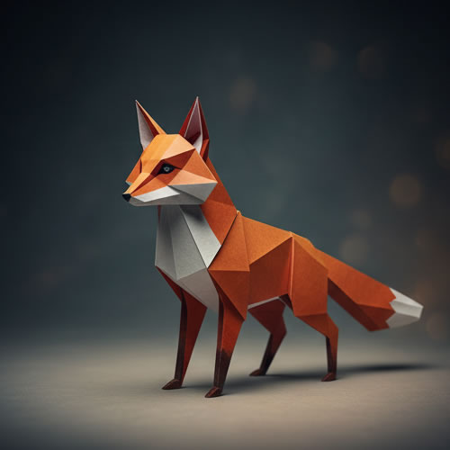

Wiley Fox
In Japan, foxes symbolize intelligence associated with the Shinto spirit Inari. This particular origami is challenging to make but produces one of the finest examples of the Kitsami Origami style.
|
|
Regal Bloodhound
Bloodhounds have been part of humankind, especially in hunting. In this lesson, we will learn to use two monochromatic paper colors to produce a simple but effective Tsumisiru effect.
|
|
Wise Owl
Owls have always been part of lore, and it isn't surprising that we also find them very much in origami. This lesson is famous for combining two different pieces into one without the use of glue or adhesive.
|
|

Resting Lion
The king of the animal world finds its place among important origami creations. This particular example utilizes curled tips, popularized by the renowned origami artist Shintzu Omahari.
|
|